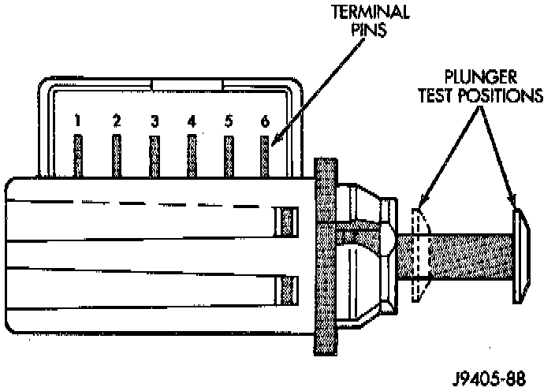

Brake Light Switch: Testing and Inspection
GENERAL INFORMATIONStop lamp switch operation can be tested with an ohmmeter. The ohmmeter is used to check continuity between the pin terminals at different plunger positions.
NOTE: The switch wire harness must be disconnected before testing switch continuity.
Stop Lamp Switch Terminal Identification:

SWITCH CIRCUIT IDENTIFICATION
- Terminals 1 and 2 are for the RWAL/ABS module and Powertrain Control Module (PCM) circuit
- Terminals 5 and 6 are for the stop lamp circuit
- Terminals 3 and 4 are for the speed control circuit
SWITCH CONTINUITY TEST
1. Check continuity between terminal pins 5 and 6 as follows:
a. Pull plunger all the way out to fully extended position.
b. Attach test leads to pins 5 and 6 and note ohmmeter reading.
c. If continuity exists, proceed to next test. Replace switch if meter indicates lack of continuity (shorted or open).
2. Check continuity between terminal pins 1 and 2 and pins 3 and 4 as follows:
a. Push switch plunger inward to fully retracted position.
b. Attach test leads to pins 1 and 2 and note ohmmeter reading.
c. If continuity exists, switch is OK. Replace switch if meter indicates lack of continuity (switch is open).